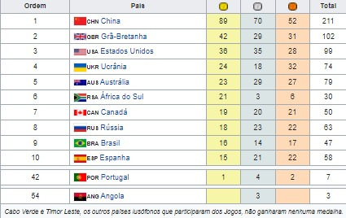

2008 Pequim, ChinaOs Jogos Paralímpicos de Verão de 2008, aconteceram pela décima terceira vez, em Pequim, na China, entre os dias 6 e 17 de Setembro de 2008.Como os Jogos Olímpicos de Verão desse mesmo ano, as provas de Hipismo foram realizadas em Hong Kong, e a Vela, em Qingdao. O mesmo slogan dos Jogos Olímpicos será utilizado: "One World, One Dream" (Um mundo, um sonho), em chinês tradicional 同一個世界同一個夢想 e em simplificado 同一个世界同一个梦想. Aproximadamente 4.200 atletas de 148 países estiveram em Pequim, muitos, com sua primeira participação em Paralímpiadas. Os jogos incluíram atletas com diversas deficiências físicas e sensoriais, tal como paralisia cerebral, amputações e cegueira. Desde 2000, os deficientes mentais tem sido excluídos dos jogos. Modalidades→Atletismo→Basquetebol →Bocha →Ciclismo →Elevação →Levantamento de peso →Halterofilismo →Esgrima →Futebol de 7 →Goalball →Hipismo →Lawn bowls →Lutas →Natação →Snooker →Tênis de mesa →Tiro com Arco →Tiro →Voleibol Medalhas |